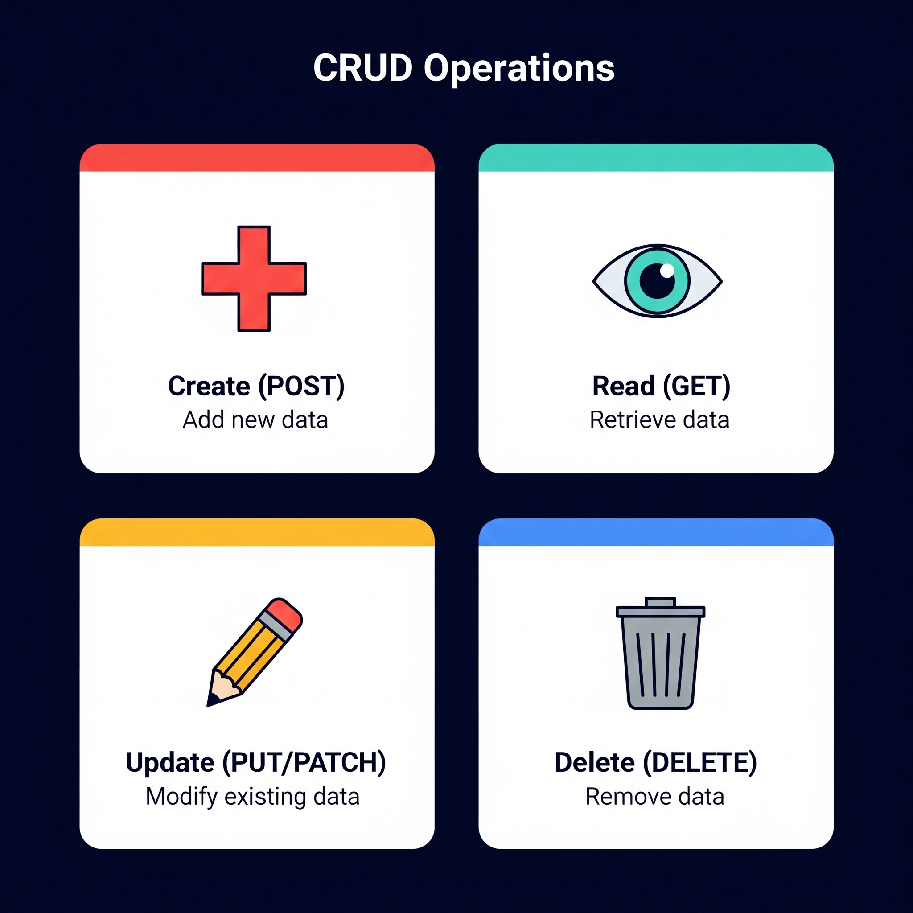

## EMPTY VERSION
library(httr2)
library(glue)Session 2: Weather Data - OpenWeatherAPI - Empty
Session 2: API Fundamentals
1. Goals & Objectives
By the end of this session, participants will be able to:
Understand the foundational concepts of APIs as a bridge for data exchange, including how they function in modern software and support real-time data extraction.
Query public APIs effectively, forming well-structured requests that interact with remote databases and return meaningful results.
Interpret JSON responses, with a focus on the data element, while also distinguishing between metadata and status codes. Develop an understanding of how HTTP status codes and API keys work to validate and secure data access.
Write clean, purposeful R code to send API requests, handle responses, and parse structured data into tidy, analyzable formats.
2. Conceptual Foundation
Part A. Theoretical ideas of APIs
P1. What is an API (again)?
It is the ability for software to communicate

P2. API Logic
Lets go deeper into understanding Define:
Client (request) –> API –> Server –> Database
Client <– API <– Server (response) <– Database

P3. Requests and Responses
Lets spend some more time on the request and response
The client sends a request asking for info (like Taylor Swift or today’s weather). This request includes:
- A URL (e.g., with parameters like ?q=San+Luis+Obispo)
- Possibly an API key
- A method (e.g., GET or POST)
The request are in the form of a url string (more on this soon…)
The server then returns a response which contains:
- data (temperature, artist name, forecast, etc.)
- metadata (This is information about the response.)
- status code (Tells you whether the request was successful)
This information is traditionally provided in JSON Format. (more on this soon…)
P4. Anatomy of JSON
Let’s focus on what the response is 1st (what we receive from the server):
Below is an example GIF of the information sent from the server in JSON format:

P5. Status Code
Status codes tell you what happened with your request:
100s: Info
200s: Success (highlight: 200 OK)
300s: Redirect
400s: Client error
500s: Server error
Note 5:
- Emphasize: In most data APIs, your goal is to get a 200 response.
- Use examples like making up a nonexistent city or artist to show how an API might respond with a 400 or 404. |
** Client Request *************************
P6. CRUD Framework
What type of client requests can we make?
CRUD Framework (Create, Read, Update, Delete)
Though APIs allow all four, Read (GET) is most common in data science.
RESTful API mapping:
Create → POST
Read → GET
Update → PUT/PATCH
Delete → DELETE

P7. GET Request

Here is the description of a GET request from that perspective.
Clientconstructs a request for a resource.APIreceives and validates theclient'srequest.Serverlocates the requested data within database.Clientreceives requested data from the server.
P8. Post Request

- Here is the description of a POST request.
Clientsends new data within the requestbody.APIreceives and validates theclient'snew data.Servercreates a new record in the database.Clientreceives a confirmation for the new record.
P9. Setup API_Key
[[Based on time do One of the three steps]]
[[1. email attendees to go to the weather website and get API key or whatever information needed before the conference. Create a video that’s displaying how to do this]]
[[1a. Discuss .Renviron.txt, how we use: to create and edit API key: usethis::edit_r_environ()]]
[[1b. Use Sys.getenv("API_KEY") to see API in console]]
[[Note that you have to use the 1a to see the api key again]] Restart R
[[2. have attendees get the key during the break session if they have not done so already]]
[[3. use a common key, but tell them it is bad practice]]
[[regardless of the decision made of the three options above have attendees store information in the environment file]]
P10. Requests, URLs & Queries
So what we’re going to first do is create our request and the most ideal way.
A request defined by a URL, which contains both:
- The endpoint (base address of the API)
- The query string (additional key-value pairs that modify the request)
We often need to glue strings together to build this full URL dynamically.
A request is not “automatically” turned into JSON when sent — it’s the response that’s usually formatted as JSON. The request is often URL-encoded if it’s a GET.
P11: What Happens Under the Hood
When we use a URL like
...?q=San+Luis+Obispo&appid=..., we’re constructing a query string, which is appended to the base URL.Think of this as “asking the question”—the query string shapes the request.
The server receives the request, processes it, and responds with structured data (typically JSON).
We’re not sending JSON in this case—we’re sending a URL with parameters. JSON is returned to us as a response format.

P12. Two Ways to Build Request Objects
Method 1: Manual String Gluing
Load Libraries
Specify city to query
## EMPTY VERSION
city_name <- "San Luis Obispo"Use this url as the base url, https://api.openweathermap.org/data/2.5/weather? (Imporve Instructions using empty and fill)
## EMPTY VERSION
current_weather_url <- glue("https://api.openweathermap.org/data/2.5/weather?", ## Base URL / Endpoint
"q=", URLencode(city_name), ## City Name
"&appid=", Sys.getenv("API_KEY"), ## Use of API Key
"&units=imperial") ## Specify the unitsPrint the url string
## EMPTY VERSION
current_weather_urlMake the request formal
## EMPTY VERSION
req <- request(current_weather_url)Print the formal request
## EMPTY VERSION
reqMethod 2: Using req_url_query()
Step 1: Build Request Object
## EMPTY VERSION
req <- request("https://api.openweathermap.org/data/2.5/weather?") %>%
req_url_query(
q = city_name,
appid = Sys.getenv("API_KEY"),
units = "imperial"
)## EMPTY VERSION
reqStep 2: Make request
## EMPTY VERSION
response <- req_perform(req)## EMPTY VERSION
# ____GET: The method used to request data.
URL: The full address the request was sent to.
Status: 200 OK: The request was successful.
Content-Type: The returned data is in JSON format.
Body: The weather data is downloaded and in memory.
Not a step: View content Type
## EMPTY VERSION
# content_type <- resp_content_type(____)## EMPTY VERSION
# ____Step 3: Process the Response
## EMPTY VERSION
# library(____)## EMPTY VERSION
## IF the status code is 200 we are good
# if (resp_status(____) == ____) {
#
# # Parse JSON
# result <- resp_body_json(____)
#
# # Print Results as JSON but in R it is a list
# print(____)
#
# #---------------------------------------
#
# # Convert to Data Frame directly
# current_weather_df <- as.data.frame(____)
#
# # Print Results as Data Frame, using dplyr
# current_weather_df %>%
# select(____, ____, ____, ____, ____) %>%
# print()
#
#
# ## ELSE state there is an Error
# } else {
# cat("Failed. Status code:", resp_status(____), "\n")
# }P13. Let’s dissect & build a function 1
Provide instructions (Improve Instructions using empty and fill)
## EMPTY VERSION
## Step 1: Define function "get_city_coords" that accepts the parameter "city"
# get_city_coords <- function(____){
#
# ## Step 2: Create API request URL
# geo_url <- glue(
# "____", # Endpoint
# "q=", URLencode(____),
# "&limit=1&appid=", Sys.getenv("____")
# )
#
# ## Step 3: Use req_perform() and request() to call the API with the URL request
# geo_response <- req_perform(request(____))
#
# ## Step 4: If the status code is 200 (OK), parse the response
# if (resp_status(____) == ____) {
# geo_data_df <- resp_body_json(____) %>%
# as.data.frame()
#
# ## Step 5: Assess if the output has 0 length, meaning no result.
# if (length(____) == 0) {
# stop("____")
# }
#
# ## Step 6: Round latitude and longitude to 2 decimal places.
# mod_1_geo_data_df <- geo_data_df %>%
# mutate(lat = round(____, 2),
# lon = round(____, 2))
#
# ## Step 7: Select and rename columns
# mod_2_geo_data_df <- mod_1_geo_data_df %>%
# select(____, ____, ____, ____) %>%
# rename(city = ____)
#
# ## Step 8: Return the final data frame
# return(____)
#
# }
# }Lets try out this new function on the city
## EMPTY VERSION
# get_city_coords(____)## EMPTY VERSION
# library(____)
#
# # List of cities you want to geocode
# cities <- c("San Luis Obispo", "Chicago", "New York", "Atlanta", "Houston", "Des Moines")
#
# # Use map_df() to apply the function to each city
# map_df(____, ____)P14. Let’s dissect & build a function 2
## EMPTY VERSION
# library(____)## EMPTY VERSION
# get_past_weather_by_city <- function(____, ____) {
# # Step 1: Get city coordinates
# coords_df <- get_city_coords(____)
# lat <- coords_df$lat
# lon <- coords_df$lon
#
# cat("Coordinates for", city, "-> Latitude:", lat, "Longitude:", lon, "\n")
#
# # Step 2: Create vector of past dates
# date_range <- as.character(today() - days(1:____))
#
# # Step 3: Define function for single date
# fetch_day_summary <- function(____) {
# weather_url <- glue(
# "____", # Endpoint
# "lat=", ____,
# "&lon=", ____,
# "&date=", ____,
# "&appid=", Sys.getenv("____"),
# "&units=imperial"
# )
#
# response <- req_perform(request(____))
#
# if (resp_status(____) == 200) {
# resp_body_json(____) %>%
# as.data.frame() %>%
# mutate(city = ____, date = ____)
# } else {
# warning(paste("Failed to get weather for", date, "-", resp_status(response)))
# return(NULL)
# }
# }
#
# # Step 4: Map over date_range and bind into a single data frame
# map_dfr(____, ____)
# }## EMPTY VERSION
# get_past_weather_by_city(____, ____)## FILLED RESPONSE
get_past_weather_by_city(city_name, 5)There are a lot of ways of doing this, I decided not to use for loop in R
## EMPTY VERSION
# num_days <- 5
#
# # Get historical weather data for each city using map_dfr
# all_weather_df <- map_dfr(
# ____,
# ~ get_past_weather_by_city(____, ____)
# )